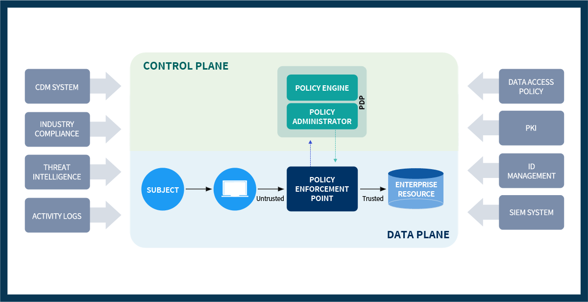

제로 트러스트 아키텍처
Zero Trust Architecture
제품이 아니라, 지속 검증과 로그 기반 운영 체계입니다.
Zero Trust Architecture
제품이 아니라, 지속 검증과 로그 기반 운영 체계입니다.
제로 트러스트는 “아무도 믿지 않는다”가 아니라,
모든 접근과 행위를 근거 로그로 검증하고, 정책으로 판단하고, 지속적으로 조정하는 보안 운영 방식입니다.
제로 트러스트 아키텍처 구현을 위한 핵심 운영 요소
정책 결정과 정책 집행
사용자·단말·애플리케이션·데이터 요청을 정책에 따라 판단하고 적용합니다.
상시 진단 및 대응 (CDM)
자산 상태, 취약 설정, 보안 정책 적용 여부를 지속적으로 확인합니다.
위협 인텔리전스 피드 (TI)
공격 IP, 도메인, 해시, 전술·기법 정보를 내부 로그와 결합합니다.
네트워크·시스템·웹·계정 활동 로그
접근 요청과 실행 행위, 로그인 이후 행위를 추적할 수 있어야 합니다.
통합보안이벤트관리 (SIEM/XDR)
분리된 로그를 하나의 공격 흐름으로 연결해 판단합니다.
자동 대응과 증거화
차단·격리·정책 조정·포렌식 증거 보존을 운영 절차로 연결합니다.

| 구분 | 기존 접근통제 중심 보안 | PLURA-AI·XDR 기반 제로 트러스트 운영 |
|---|---|---|
| 접근 판단 | 초기 인증과 고정 권한에 의존 | 사용자·단말·행위·위험도를 지속적으로 검증 |
| 로그 가시성 | 로그가 분산되어 공격 흐름 확인이 어려움 | 웹·호스트·계정·포렌식 로그를 통합해 맥락 분석 |
| 탐지 기준 | 장비별 경보와 시그니처 중심 | MITRE ATT&CK 기반 행위 분석과 상관 탐지 |
| 대응 방식 | 수동 확인 후 개별 장비에서 조치 | 정책 기반 차단·격리·증거화·관제 연계 |
| 운영 목표 | 접근 허용/차단 중심 | 검증 기반 보안 운영으로 전환 |
제로 트러스트는 한 번에 완성되는 제품이 아니라, 로그를 만들고 수집하고 분석하며 정책을 계속 개선하는 운영 체계입니다. PLURA-AI·XDR은 이 과정을 WAF·EDR·SIEM·Forensic·SOC와 연결해 실행 가능한 보안 운영으로 전환합니다.